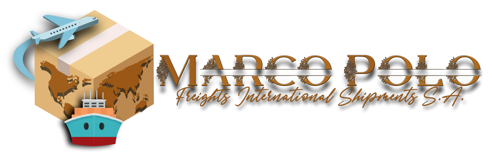

<!DOCTYPE html>
<html lang="es">
<head>
 <!---   <meta charset="UTF-8">
    <meta http-equiv="X-UA-Compatible" content="IE=edge">
    <meta name="viewport" content="width=device-width, initial-scale=1.0">
    <link rel="stylesheet"   href="css/indexcss.css">
    <link rel="stylesheet"   href="css/menu.css">
     <!-- partial:index.partial.html --
<!--Google Fonts--
		<link href='https://fonts.googleapis.com/css?family=Sintony:400,700&subset=latin-ext' rel='stylesheet' type='text/css'>
		
        <!--Font-awsome--
                <link href="//maxcdn.bootstrapcdn.com/font-awesome/4.1.0/css/font-awesome.min.css" rel="stylesheet">
        
    <title>inicio Marco Polo</title>
</head>
<body>
   <div class="container">
			<header>
      
				<div class ="logo">
                    <a href="index.html"> </a>
                </div>
        
			</header>
			
						
			<nav class="menu">
				<ul>
					<li class="active">
						<a href="#">Inicio</a>
					</li>
					<li>
					 <a href="Conocenos.html">Conocenos</a>
				</li>
                <li>
                    <a href="servicio.html">Servicio</a>
               </li>
              
           <li>
            <a href="misionyvision.html">Misión y Visión</a>
       </li>
      
   <li>
    <a href="contacto.html">Contacto</a>
</li>
			</nav>
		</div>


        <div class="infop">
           
Con la experiencia en el ámbito de proyectos, logística y comercio internacional hemos adquirido experiencia de metodología, procesos, documentos, permisos y procedimientos de carga que nos hace entender de mejor forma el Mercado. Iniciamos este proyecto para brindar mejores soluciones a beneficio de nuestro cliente y aumentando la actual base de datos con que contamos en las áreas Marítimas, Aéreas y Terrestres para envíos y recibos de mercancía entre los diferentes países que nos rodean brindando una mejor opción ofreciendo mejores precios y servicios. Además de crear convenios y apoyos a los diferentes actores que influyen en estas áreas.</p>

  <p>RECURSOS PERSONALES Y METAS</p> 
    
        Contamos con una base de datos de 180 clientes de República Dominicana con la necesidad de envíos y recibos internacional entre Panamá y República Dominicana.
    
        Distribución de DHL Courier y paquetería para envíos a América, Europa, Asia y Oceanía.
    
        Contamos con una base de datos de 75 clientes que efectúan envíos entre Panama y Venezuela por motivos familiares y amigos.
    
        Contamos con una base de datos de clientes que efectúan envíos a Costa Rica, Nicaragua, Honduras, El Salvador, Guatemala y México.
    
        Contamos con una base de datos de clientes y empresarios que envían mercancía entre Panamá y Colombia.
    
        Pertenecemos a una base de datos para Mudanzas Internacionales en América Central México y parte de Sur América que nos comunican clientes que necesitan efectuar sus mudanzas y presentar presupuestos de los mismos.
    
        Agencia Aduanal y Trading para el envío de mercancía entre Panamá y Chile tanto marítima como Aérea.
    
        Dirección de Exportación e Importaciones de Mercosur para América Central, Islas del Caribe y Norte América.</p>
    
        <ul class="paiseslista">
            <li> 1.	Brasil</li>
            <li> 2.	Argentina</li>
            <li> 3.	Paraguay</li>
            <li> 4.	Uruguay</li>
            <li> 5.	Chile</li>
        </ul>
    
<p>Agentes de Carga, Comercio Internacional, Logística, Aduanal y Clientes en México.</p>
    
    <ul class="paiseslista">
            <li> 1. Veracruz, México</li>
            <li> 2. Puebla, México</li>
            <li> 3. Guadalajara, México</li>
            <li>  4. Michoacán, México</li>
           
        </ul>
    
     <p>Puertos</p>
    
     <ul class="paiseslista">
        <li> 1. Veracruz</li>
        <li> 2. Altamira</li>
        <li> 3. Lázaro</li>
        <li> 4. Cárdenas</li>
        <li> 5. Manzanillo </li>
        <li> 6. Baja California</li>
       
    </ul>
<p>Agencia Aduanal y Comercio Internacional   Colombia</p>
    
        Multibox Venezuela
                Envíos y recibos de Carga Venezuela
                Toda Venezuela.
    
        Envío de Miami Florida, USA de Kristal Logistics hacia Panamá que puede ser Aéreo, Marítimo y Terrestre de Compras por Internet provenientes de Europa, China, Japón, Korea, Vietnan o Singapur.
    
         Pangea Logistics para solucitudes de intercambio comercial entre Panamá y Honduras.
    
         Okey Express en Italia, Roma para envíos y recibos de carga entre Italia y Panamá.
    
         Agencia Aduanal para introducción de mercancía para la Aduana de Estados Unidos de América. Recepción y entrega a clientes.
    
         Agencia Aduanal y Operaciones en República Dominicana.
    
        Comercio Internacional
        Presentación de solicitudes desarrollo del proyectos hasta llevar su mercancía a destino.</p>
    
    
    
       <p>PERSPECTIVAS DEL NEGOCIO</p>
    
      
      
      
        
      
      
      
    
        
     
  
      

        <ul class="paiseslista">
            <li> Capacitación.</li>
            <li> Actualización de embarques. </li>
            <li>  Mejora contínua en la atención al cliente. </li>
            <li>  Respuesta en 48 horas como máximo de solicitudes de clientes. </li>
            <li>Crecimiento en la cartera de clientes.</li>
            <li>  Encuestas de calidad y satisfacción de los servicios. </li>
            <li>  Conocimientos de otro idioma, palabras mínimas para el entendimiento de solicitudes. </li>
            <li>   Uniforme de la empresa para brindar presencia e imagen al cliente.</li>
            <li>   Contar con una máquina que reciba pagos con tarjeta, Clave, Visa</li>
            <li>Obtener máquina de punto pago para cubrir necesidades de nuestros clientes. </li>
            <li> Brindar café, agua, galletas a clientes en su espera. </li>
            <li>  Propaganda de la empresa.</li>
            <li>      Seguridad al cliente a su llegada y salida. </li>
            <li>  Contar con apoyo de servicio de transporte, ya sea Uber, Cabify, entre otros, para la llegada de nuevos clientes a la empresa.</li>
            <li>  Contar con un letrero exterior para identificar el negocio.</li>
           
           
        </ul>


        </div>
  
    
        <div class="footerconocenos">
            <p class="textofoot1conocenos">Derechos reservados empresa Marco Polo,  <p class="textofoot2conocenos">programador por Sergio Merino Cortez</p> </p>
           
                            </div>
                        -->
</body>
</html>